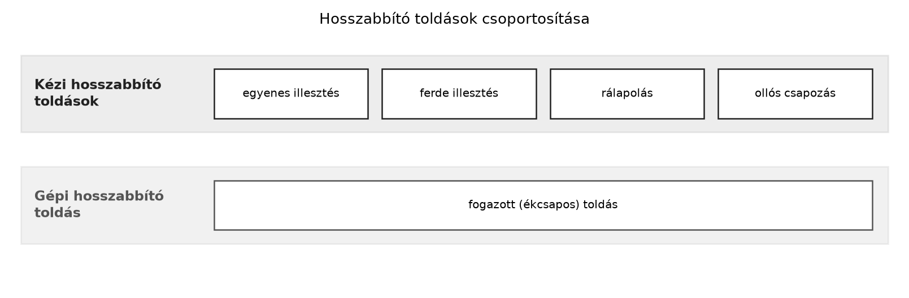
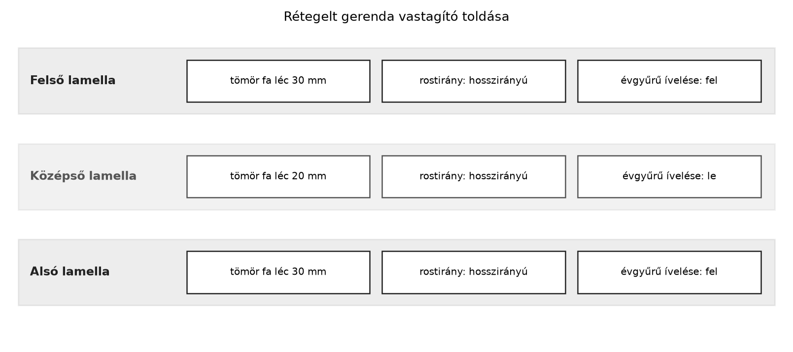

Az asztalosműhelyben gyakran kell hosszabb faanyagot készítenünk, mint amilyet egy szál deszkából kivághatunk. Például egy 4,20 m hosszú ablakpárkányt rendel a vevő, de a raktárban lévő tömör fa palló csak 2,50 m hosszú. Vagy egy régi ablak alsó keresztosztóját kell javítani, és csak az egyik felét tudjuk megtartani. Ilyenkor a faanyagot rostirányban, azaz hosszában toldani kell. A rajzon pontosan meg kell mutatnunk, hogyan csatlakozik a két darab, mert ebből tud a következő műveletben az asztalos dolgozni.
A hosszabbító toldás két vagy több faanyag végét köti össze rostirányban, hogy nagyobb használati hosszúságot kapjunk. A vastagító toldás ezzel szemben a darabokat rétegirányban, egymásra ragasztva növeli, így vastagabb vagy erősebb keresztmetszet jön létre. A rajz mindkét esetben megmutatja a csatlakozó felületeket, a ragasztási síkot és a fontos méreteket.
Ebben az alfejezetben a Szélesítő toldások és erősítéseik ábrázolása alfejezetben tanult jelölési alapokra építünk.
Képzelj el egy tömör tölgy takarólécet (nem teherviselő párkányt), amelynek teljes hossza 1,10 m, vastagsága 30 mm, szélessége 80 mm. A műhelyben csak 700 mm hosszú tölgy deszkadarabok vannak. Két darabot 1:8 arányú ferde hosszabbító toldással egyesítünk (30 mm vastagságnál a ferde rész hossza 240 mm, így 700 + 700 − 240 = 1160 mm nyers hossz adódik, amelyet 1100 mm-re vágunk). Teherhordó lépcsőfokot hosszában nem toldunk: a fokot egy darabból vagy szélességben táblásítva készítjük (ellenőrizendő: lépcsőgyártási előírás). A toldásnál a végeket ferde síkban levágjuk, ragasztóval bevonjuk, és összepréseljük. A kész darab oldalnézetben úgy néz ki, mintha egyetlen hosszú deszka lenne, de a rajzon vékony, ferde vonallal jelöljük a toldás helyét. A rajz nélkül a műhelyben nem tudnánk, milyen szögben vágjuk le a végeket, és mekkora legyen a ragasztott felület.
Definíció. Hosszabbító toldás a faanyagok olyan kötése, amelyben a darabok rostirányban folytatják egymást, és a toldás felületei ragasztással vagy mechanikai kapcsolattal átadják az erőt.
A hosszabbító toldásoknak több fajtájuk van. A rajzon mindegyik típusnak más a felülnézeti vagy metszeti képe:
Az alábbi ábra a csoportosítást mutatja:

Szabvány. A faipari rajz a szabványos vonalfajtákat, méretmegadást és metszetjelölést használja. Az MSZ EN ISO 128 sorozat szerint a látható éleket vastag folytonos vonallal, a takart éleket szaggatott vonallal, a metszeti felületeket pedig vékony ferde sraffozással rajzoljuk (a pontos szabványhivatkozás ellenőrizendő). A ragasztási síkot gyakran vékony folytonos vonallal, „ragasztás” felirattal vagy anyagjelöléssel tüntetjük fel.
A HTML-változat ferde toldás-kalkulátorában a vastagság és a hajlás (1:4…1:12) állítható; kiírja az hosszt, az arányt és a két darabból kapható teljes hosszt.
A rajzon a hosszméretet mm-ben adjuk meg, de a mértékegységet nem írjuk ki. Az anyagjelölést a szabványos sraffozás vagy a rajzfelirat mutatja. A toldás helyét mindig egyértelműen jelöljük, mert a munkadarab szilárdsága a toldáson múlik.
A ferde illesztésnél a ragasztófelület hossza nagyobb, mint az egyenes illesztésnél. Minél hosszabb a ferde felület, annál nagyobb a ragasztófelület, és annál jobb az erőátadás. Ha a ferde vágás a rostiránnyal szöget zár be, a vágás hosszát a vastagság és a szög határozza meg:
ahol a ferde vágás hossza a toldás síkjában (mm), a darab vastagsága (mm), a ferde vágás és a rostirány közötti hajlásszög.
Példa. Egy tölgy takaróléc toldásához vastag deszkát használunk. A ferde vágás aránya 1:8, azaz . A ferde vágás hossza:
A toldás tehát körülbelül 240 mm hosszú ragasztási felületet ad. (Ha ugyanezt 15°-os szöggel vágnánk, adódna, azaz csak kb. 3,9-szeres hossz: ez rövid, csak takart, nem teherviselő toldásnál fogadható el.) Ha ugyanezt egyenes illesztéssel készítenénk, a ragasztási felület csak a 30 mm-es homlokfelület lenne. A hosszabb ferde felület miatt a kötés szilárdabb, de a rajzon mindig meg kell adni a szöget vagy a hossz/vastagság arányt.
Megjegyzés. A gyakorlatban a ferde toldást aránnyal adják meg: a ferde hajlás kb. 1:6…1:10 (tájékoztató), azaz ; 1:6-nál , 1:8-nál . Ezt a rajzon a ferde vonal mellett aránypárral is jelölhetjük; az arányt a mindenkori szabvány vagy a gyártói előírás rögzíti (ellenőrizendő: aktuális szabvány/gyártói előírás).
A gépi fogazott toldás (ékcsapos vagy ujjillesztés) egyenletes fogakból áll, amelyeket marógéppel, sablonnal készítenek. A rajzon a toldás helyét sűrű, egyenletes fogazás jelzi, gyakran sematikusan. A fogak méretét és osztását a gép szerszámának megfelelően adják meg, ezért a rajzon a fogosztást tájékoztató értékként tüntetjük fel, vagy „gépi fogazott toldás” feliratot írunk. A fogazott toldás nagy ragasztási felületet ad, és sorozatgyártásban, lécek és keretanyagok hosszabb toldására használják.
Gépbiztonság. A fogazott toldást készítő gépet csak betanított, felügyelt tanuló kezelheti; védőburkolat, elszívás és a gépkönyvben előírt egyéni védőeszközök mellett. A rajzi órán a fogazott toldást csak rajzoljuk, műhelyben a gépi megmunkálást külön technológiai lap szabályozza.
Definíció. Vastagító toldás a faanyag rétegirányú egyesítése, amelynél a darabok lapjuk mentén, egymáson fekszenek, és ragasztással egy vastagabb keresztmetszetet alkotnak.
A vastagító toldást akkor használjuk, ha egy darab fából a kívánt vastagság nem vágható ki, vagy ha a rétegelt felépítés jobb méretstabilitást ad. A rajzon a rétegek sorrendje, a szálirány és a ragasztási síkok jól láthatók.
Példa: rétegelt gerenda. Egy 80 mm vastag asztallábat három rétegből ragasztunk össze: 30 mm + 20 mm + 30 mm tömör léc. A három lamella rostiránya egyaránt a láb hossztengelyével párhuzamos. A vetemedést úgy csökkentjük, hogy a szomszédos lamellák évgyűrűállása ellentétes (az ívek egymással szembe fordulnak), és lehetőleg álló évgyűrűs anyagot használunk. A rajzon ezt a keresztmetszetben az évgyűrű-ívekkel jelöljük.

Példa: ablakszelvény. A hagyományos ablakkeret szelvénye gyakran nem egyetlen tömör fából készül, hanem több réteg vastagító toldásával, hogy ne repedjen, és a profil könnyebben kialakítható legyen. A rajzon az ablakszelvény keresztmetszete mutatja a rétegeket, a profilozott éleket, a hornyokat és a ragasztási síkokat.
A hosszabbító és vastagító toldások rajzát főként a következő termékeknél használjuk:
A rajzon mindig fel kell tüntetni, hogy a toldott darab melyik része látható felület, és melyik része kerül takarásba, mert ez befolyásolja a toldás elhelyezését.
A rajz ellenőrzésekor a következőkre figyelünk:
Hiba esetén a rajzot ki kell javítani, mert a műhelyben a hiányos rajz téves vágáshoz vagy rossz ragasztáshoz vezet.
Egy asztalos egy régi parasztház ablakfelújításán dolgozott. A nyílászáró alsó keresztosztója korhadt volt, de csak az egyik fele. A teljes csere drága lett volna, mert a felső rész még jó állapotú volt. Az asztalos a korhadt részt kivágta, a megmaradt részt ferde toldással megtoldotta. A rajzon megadta a ferde toldás szögét (1:8 arány), a toldás hosszát és a ragasztási felületet. A műhelyben a ferde vágást kézi fűrésszel és gyaluval alakította ki, majd ragasztással és csavaros beszorítással rögzítette. A toldás alig látszott a festés után. A tanulság: a rajzon ellenőrizte, hogy a két darab rostiránya egy vonalba essen és a ferde sík 1:8 arányú legyen; így a ragasztási felület hosszfa–hosszfa, és a kültéri ragasztással (D3/D4, ellenőrizendő: gyártói adatlap) készült, felületkezelt toldás tartós lett.
1. feladat (A) Fogalmazd meg a hosszabbító toldás és a vastagító toldás definícióját, és sorold fel a hosszabbító toldások legalább négy fajtáját.
2. feladat (A) Rajzold le egyszerű egyenes toldás felülnézetét és oldalmetszetét. Jelöld a toldási síkot és a méreteket (vastagság 20 mm, szélesség 60 mm, hosszok 100 mm + 100 mm). A mértékegységet a rajzon ne írd ki.
3. feladat (B) (Gyakorló számítás; a valós toldás ajánlott hajlása 1:6…1:10, ellenőrizendő.) Számítsd ki a ferde toldási felület hosszát, ha a deszka vastagsága 35 mm, a ferde vágás pedig a rostiránnyal 12°-os szöget zár be. Állapítsd meg, hányszorosa ez a hossz a vastagságnak, és hasonlítsd össze az egyenes illesztés ragasztási felületével.
4. feladat (B) Készítsd el egy ollós csapos hosszabbító toldás oldalmetszeti rajzát. Adatok: anyag 60 × 25 mm keresztmetszet, csapvastagság 8 mm (kb. a vastagság harmada), csapszélesség 60 mm (a teljes szélesség), csaphossz 80 mm. Jelöld a ragasztási felületeket.
5. feladat (C) Egy tölgy ablakpárkányt 2,60 m hosszúra kell készíteni, de csak 1,40 m és 1,20 m hosszú pallók állnak rendelkezésre. Válaszd ki, hogy milyen hosszabbító toldást alkalmazz, és indokold a választásodat a szilárdság, a megjelenés és a gyárthatóság szempontjából. Készítsd el a toldási csomópont vázlatát.
6. feladat (D) Tervezz meg egy vastagító toldással kialakított asztallábat. Az asztalláb végleges mérete 80 mm × 80 mm, hossza 720 mm. Három rétegből ragasztod össze, a középső lamella évgyűrűállása ellentétes. Készítsd el a rajzot: metszet a láb keresztmetszetéről, rétegrend, évgyűrűállás, méretek. Add meg a szabásjegyzék-sorokat (kész és nyers méret) és az anyagszükségletet m³-ben.
Önellenőrzés – válaszok
1. feladat – megoldás. A hosszabbító toldás a darabok rostirányú egyesítése a nagyobb hossz érdekében, a vastagító toldás a darabok rétegirányú egymásra ragasztása a nagyobb vastagság vagy keresztmetszet érdekében. A hosszabbító toldások fajtái: egyenes illesztés, ferde illesztés, rálapolás, csapozás (ollós), gépi fogazott (ékcsapos).
2. feladat – megoldás. A rajzon a két darab felülnézetben egymás mellett, a toldási síknál vékony folytonos vonallal csatlakozik. A méretek: 100 + 100 = 200 mm teljes hossz, szélesség 60, vastagság 20 (ez utóbbi az oldalmetszetben látszik). A toldási sík a metszeten vékony sraffozással jelölhető.
3. feladat – megoldás. . A ferde hossz:
Ez a vastagság -szorosa. Az egyenes illesztés ragasztási felülete 35 mm hosszú, tehát a ferde toldás közel ötször akkora felületet ad.
4. feladat – megoldás. Az oldalmetszetben a csap 80 mm hosszú, 8 mm vastag, és a 25 mm-es vastagság közepén fekszik. A csaprés a másik darabban 80 mm mély (+ 1 mm hézag), a csap két oldalán (25 − 8) / 2 = 8,5 mm vastag pofával. A ragasztási felületek a csap két lapja és a vállak; ezeket vastag vonallal vagy sraffozással jelöljük.
5. feladat – megoldás. Az ablakpárkány látható, igénybe vett elem. A ferde toldást választjuk, mert nagyobb ragasztási felületet ad, mint az egyenes illesztés, és a ferde vonal a felületkezelés után kevésbé feltűnő, mint egy vastag fogazott toldás. A rálapolás gyengébb lenne hajlításra, az ollós csap pedig bonyolultabb, és jobban látszana. A vázlaton a toldás a párkány vastagságánál ferde síkban fut, α ≈ 7° (1:8 arány), a toldás helyét a felső látható felületen vékony vonallal jelöljük.
6. feladat – megoldás. A metszeten a három réteg: 30 mm + 20 mm + 30 mm = 80 mm teljes vastagság. A szélesség 80 mm. Mindhárom lamella rostiránya hosszirányú; a középső lamella évgyűrű-ívei ellentétes irányba fordulnak, mint a két szélsőé. Kész méret: két darab 30 × 80 × 720 mm és egy darab 20 × 80 × 720 mm, összesen . Nyers méret (ráhagyással, tájékoztató): 2 db 740 × 85 × 33 mm és 1 db 740 × 85 × 23 mm, azaz . A rajzon a rétegeket vékony folytonos vonal választja el, az évgyűrűállást ívek mutatják, a rostirányt a hossznézeten nyíl, a ragasztási felületeket külön jelölés.
A hosszabbító toldás a faanyagok rostirányú egyesítése, hogy nagyobb hosszúságot kapjunk. Fő fajtái: egyenes illesztés, ferde illesztés, rálapolás, csapozás (ollós) és gépi fogazott (ékcsapos). A rajzon a toldás helyét vékony folytonos vonallal, a ragasztási felületet sraffozással vagy külön jelöléssel adjuk meg. A ferde toldás ragasztási hosszát képlettel számítjuk, ahol a vastagság, a ferde vágás rostiránnyal bezárt szöge. A nagyobb ferde felület erősebb kötést ad. A vastagító toldás rétegirányú egyesítés, amelyet rétegelt gerendákban és ablakszelvényekben használunk; a rajzon a rétegeket, a szálirányt és a ragasztási síkokat mindig feltüntetjük. A hosszabbító toldások rajzát a toldások készítésénél (Hosszabbító toldások készítése) és az egyszerű tömörfa bútorok szerkezeti rajzánál (Egyszerű tömörfa bútorok szerkezeti rajza) használjuk fel.
A fejezet a hazai faipari szakrajzi gyakorlatra, az MSZ EN ISO 128, 129, 5455 és 7200 szabványsorozat általános rajzi szabályaira épül (a pontos számok és a hatályos változat ellenőrizendő). A ferde toldás hossz/vastagság aránya (1:6–1:10) a hagyományos asztalosgyakorlatból származó tájékoztató érték, amelyet az aktuális szabvány vagy gyártói előírás felülírhat. A gépi fogazott toldás jelölését a gép szerszámgyártójának adatai és a faipari gépek biztonsági előírásai (MSZ EN ISO 19085 sorozat – ellenőrizendő) szerint kell pontosítani. Az ábrák a megadott rajzleírások alapján készítendők el.